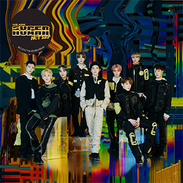

Inicio
Es una banda surcoreana que debutó en 2016 bajo el sello de SM Entertainment.
Biografía
NCT 127 es una subunidad del grupo surcoreano NCT, formado por SM Entertainment. fue creado como parte de un concepto innovador de SM Entertainment llamado "NCT" (Neo Culture Technology), que implica tener un número ilimitado de miembros divididos en varias subunidades basadas en diferentes ciudades alrededor del mundo. NCT 127 se centra principalmente en Seúl, Corea del Sur. Debutó el 7 de julio de 2016 con el EP NCT #127. El nombre "127" representa la longitud geográfica de Seúl, reflejando la visión global de la ciudad como un centro de cultura pop. La alineación original incluyó a siete miembros: Taeil, Taeyong, Yuta, Jaehyun, Winwin, Mark y Haechan. Posteriormente, se unieron Doyoung, Johnny y Jungwoo. Su color oficial es el verde neón y su fandom oficialmente es llamado NCTzen.
NCT 127 ha realizado giras internacionales, llevando su música a audiencias en Asia, América y Europa. La versatilidad y la diversidad cultural de sus miembros han contribuido a su popularidad global, estableciéndolos como una fuerza destacada en la industria del K-pop. Además de su música, los miembros de NCT 127 participan en una variedad de actividades, incluyendo programas de televisión, actuación y modelaje, lo que ha aumentado aún más su visibilidad y atractivo mundial.
Integrantes
Johnny
Mark
Yuta
Doyoung
Jungwoo
Haechan
Jaehyun
Taeyong
Taeil
Discografía
El grupo es conocido por su estilo musical diverso, que abarca géneros como el pop, hip-hop, R&B y música electrónica, y por su capacidad para incorporar coreografías intensas y visualmente impactantes en sus actuaciones. Entre sus lanzamientos más destacados se encuentran los álbumes Regular-Irregular (2018), Neo Zone (2020), y Sticker (2021), los cuales han tenido éxito tanto en Corea del Sur como en el extranjero, destacándose en las listas de Billboard.

NCT #127 Neo Zone

Cherry Bomb

SuperHuman

Favorite
Chain
Sticker
Ay-Yo